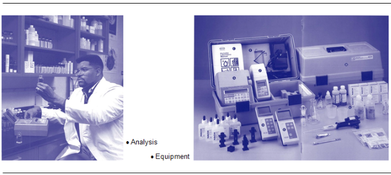
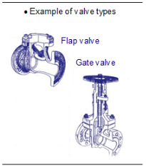
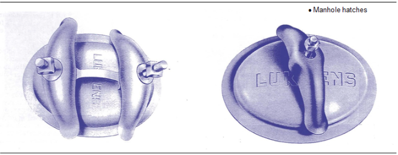
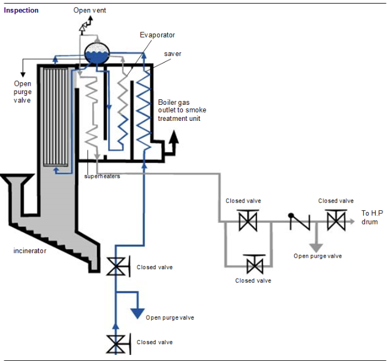
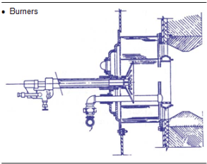
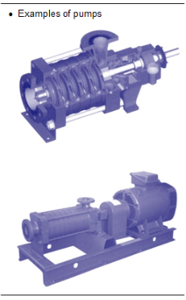
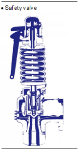

La conduite efficace de la chaudière est une responsabilité importante confiée à l’opérateur ou au chef de quart de façon à assurer la sécurité du personnel de l’usine et le maintien des installations en bon état. Le personnel de conduite doit être familier avec les procédures d’exploitation de la chaudière et des équipements associés. Il doit être capable de reconnaître les conditions anormales ou dangereuses de fonctionnement et agir en conséquence.
Chaque site spécifique doit développer une procédure globale de démarrage et d’arrêt d’une ligne d’incinération, procédure prenant en compte celles de chaque équipement et établissant un ordre efficace des actions à poser sur chaque équipement, dans le respect de la sécurité.
La compréhension et la maîtrise de ces procédures nécessitent un bon niveau de connaissance de tous les équipements (conception, utilité, plage de fonctionnement, relations avec les autres équipements). Parmi tous les équipements de l’usine, la chaudière est le maillon le plus important de la chaîne. Ce module va vous présenter une connaissance de base des principes généraux de sa conduite.
Seule la procédure d’exploitation spécifique à votre site peut inclure tous les points essentiels qu’il faut absolument respecter pour des raisons de sécurité et d’efficacité.
La documentation est principalement constituée par des procédures constructeur. Ces procédures sont basées sur l’expérience et incluent les informations sur le fonctionnement des équipements. Des valeurs critiques et des règles de sécurités y sont aussi énoncées.
Cette documentation doit rester en permanence à disposition du personnel d’exploitation. En effet, en cas d’intervention sur le matériel lors de l’exploitation, il est préférable de connaître l’ensemble des données du problème.
Le démarrage d’une chaudière est une phase critique de l’exploitation. Il s’agit en effet d’une opération délicate car très peu automatisée. La compétence de l’opérateur est donc primordiale : pour qu’un démarrage se fasse dans de bonnes conditions, il lui faut une parfaite connaissance de l’installation et des procédures constructeur. Dans ce qui suit, nous allons signaler les points importants à respecter.
GénéralitésAvant le démarrage de la chaudière, il faut s’assurer que toute l’instrumentation, les sécurités et les équipements nécessaires au fonctionnement du procédé (ventilateur de tirage, traitement des fumées, brûleurs, évacuation des résidus d’incinération, réchauffeurs d’air…), ainsi que les systèmes consommateurs de vapeur (contournement, condenseurs et mise sous vide…) sont en état de fonctionnement.
Une ronde doit être effectuée pour s’assurer que l’installation est en mesure de démarrer sans risque pour le matériel et pour le personnel. Il faudra s’assurer, par exemple, que toutes les portes de la chaudière sont fermées et qu’aucun personnel n’est dans le four.
Lors du démarrage, il faut vérifier les points suivants :
[width=0.85]{Images/M13/M13_2.png}
Configuration de l’installation avant le démarrageL’évent de démarrage et les départs du ballon vers les surchauffeurs doivent être ouverts. Le départ vapeur vers le barillet HP doit être fermé. La chaudière peut être remplie grâce aux pompes alimentaires, via la vanne de régulation du niveau ballon, mais il est préférable de la remplir par les pompes d’appoint pour éviter un laminage excessif de la vanne de régulation du niveau ballon.
Le niveau d’eau dans le ballon doit être amené juste au-dessus de la limite basse. Cela permet d’éviter le dépassement de la limite haute lors du gonflement de la chaudière, sinon il y a un risque que l’eau liquide aille dans le circuit de la vapeur.
ChauffageSi le foyer comporte de nouveaux réfractaires (en partie ou en totalité), il est nécessaire de les sécher avant de fonctionner à pleine charge. En effet, l’eau prisonnière du réfractaire, se vaporise lors de la montée en température et la pression augmente alors à l’intérieur du réfractaire, provoquant des explosions qui peuvent l’écrouler. L’opération de séchage est spécifiée par le constructeur. Elle peut durer de 2 à 3 jours. Cela évite un vieillissement prématuré du réfractaire et de tous les équipements associés.
Les vitesses de montée en température et en pression de la chaudière sont spécifiées par le constructeur. Cette rampe de montée ne doit pas être dépassée sous peine d’endommager le matériel. Tout au long du démarrage, il est très important de contrôler ces paramètres.
L’évent de démarrage situé sur le ballon de chaudière (appelé aussi évent 3 bars) doit être ouvert lors du démarrage car il permet une circulation de vapeur. Une partie de l’énergie produite par la combustion est alors évacuée et évite la surchauffe et la dégradation des tubes écrans. Le niveau de ballon va beaucoup varier pendant cette période, il va augmenter par effet de dilatation de l’eau de la chaudière, puis va diminuer sous l’effet de tassement dû à la montée en pression. On doit donc accorder la plus grande attention à ce niveau et ouvrir les purges si nécessaire pour éviter d’atteindre un niveau trop haut.
Le passage en régime d’exploitationLorsque la chaudière atteint ses conditions d’exploitation, un certain nombre de précautions sont à prendre pour éviter les coups de bélier et les gradients de température dans les tubulures. Lors de l’ouverture d’une vanne sur une tuyauterie vapeur, il est important de purger la partie qui va recevoir la vapeur. Ainsi la phase vapeur ne rentrera pas en contact de la phase liquide, et donc on évitera tout coup de bélier.
Dans le même ordre d’idée, il est conseillé de conditionner correctement la ligne, c’est-à-dire ouvrir le by-pass des vannes de tête très progressivement pour augmenter très lentement la température de la tuyauterie. Cela évite à la fois les coups de bélier et les efforts mécaniques trop brusques dus aux dilatations. Après l’ouverture de la vanne, il ne faut pas oublier de refermer le by-pass.
L’exploitationLorsque la chaudière est en service, il est bon d’avoir un enregistrement régulier des données de fonctionnement de la chaudière afin de pouvoir les comparer et prédire ses performances. Ces informations sont importantes pour diagnostiquer les problèmes si des opérations anormales se produisent. L’enregistrement doit prendre en compte tous les paramètres d’exploitation : température, pression, débit, dépression, intensités moteur, position des registres et seuils de déclenchement d’alarmes et de sécurités.
Points à vérifier régulièrement et consignes correctrices :Qualité de l’eau alimentaire La surveillance de la qualité de l’eau alimentaire est primordiale pour éviter l’encrassement et le vieillissement anticipé de la chaudière. Cela nécessite des analyses régulières pour ajuster les dosages de réactifs. Cette correction est effectuée soit par ajout de réactifs chimiques, soit par une déconcentration des matières en suspension par des purges. Il faut distinguer deux purges principales :

Fig. 1
Recommandations diverses :

Fig. 2
S’il y a présence d’huile dans l’eau (ce qui se manifeste par une présence de mousse et dépôts), les fuites proviennent généralement des paliers de la turbine. Dans ce cas, la chaudière doit être immédiatement arrêtée et le circuit eau/vapeur complètement purgé.
La présence de phase liquide dans les surchauffeurs ou les barillets provoque des coups de béliers qui peuvent grandement endommager le matériel. Cette présence peut avoir diverses causes :
Le fonctionnement des soupapes doit être vérifié périodiquement. En cas de petite fuite, on notera le problème et on effectuera la réparation lors d’un arrêt programmé de la chaudière. En cas de grosse fuite, la réparation doit se faire dès que possible afin d’éviter la détérioration de la soupape.
Les limiteurs de débit sont fortement déconseillés sur les soupapes de sécurité et doivent être posés en accord avec les spécifications constructeur en s’assurant qu’ils ne perturbent en rien le fonctionnement ni les performances de la soupape.
Les fuitesUne inspection périodique doit être effectuée pour vérifier l’absence de fuite sur l’installation chaudière, notamment sur les circuits vapeur, eau, air et fumée. Si les fuites sont minimes, on pourra les colmater au prochain arrêt programmé de la chaudière. Si elles sont importantes, la chaudière doit être arrêtée comme suit :
Il faut être extrêmement prudent avec des fuites de vapeurs HP qui peuvent littéralement découper une personne.
Le ramonageLes surfaces d’échanges thermiques de la chaudière doivent être régulièrement débarrassées du dépôt de suie qui s’accumule sur ces dernières pour conserver leur efficacité thermique. À cet effet, on effectue régulièrement (une fois par jour environ) un ramonage. Les trois principales méthodes de ramonages sont :
Une partie des cendres produites lors du ramonage se dépose dans des trémies prévues à cet effet. Elles sont ensuite véhiculées par des transporteurs à chaînes ou à vis, ou encore par un système de transport pneumatique vers un silo de stockage ou des « big bags » (sortes de grands sacs étanches). Ces résidus seront ensuite transportés dans des camions pour être traités, puis stockés en décharge.
Ceci se fait par l’intermédiaire de sas à doubles clapets ou d’écluses qui permettent d’éviter l’entrée d’air parasite dans le parcours des fumées. Tout ce processus est développé dans le module 10.
Attention : Ces résidus sont dangereux et la plus grande prudence est recommandée lorsque l’on doit les manipuler. Masque, système respiratoire si nécessaire, gants et combinaison étanche sont requis si l’on doit avoir un contact direct avec le produit.
Arrêt normal de la chaudièreComme le démarrage de la chaudière, l’arrêt est une phase critique. Il faut donc se reporter aux documentations constructeur et suivre scrupuleusement la procédure indiquée.
Pour arrêter la chaudière, il suffit de mettre bas les feux, c’est-à-dire de stopper l’alimentation en combustible (ordures ménagères) et de stopper les brûleurs.
Les points importants à surveiller sont :
Dans ce cas, les principales opérations nécessaires sont :
Il est conseillé d’attendre que la chaudière soit suffisamment refroidie avant d’effectuer la vidange, d’une part pour éviter de former des constructions de boues dans les tubes, d’autre part pour pouvoir visiter le four sans danger pour le personnel.
Si les purges sont collectées sur la même vanne de vidange, assurez-vous que seules les vannes de purge de la chaudière que vous voulez vider sont ouvertes. Dès que la chaudière est vide fermez les vannes de purge continue et consignez-les !
Stockage chaudièreLors de l’arrêt d’une chaudière, il y a deux façons de conditionner pour le stockage :
Remplir entièrement la chaudière d’eau dégazée contenant des réducteurs d’oxygène. Si possible, remplir les surchauffeurs non munis de purges d’eau déminéralisée pour éviter les dépôts de particules solides pendant l’arrêt de la chaudière.
Injecter ensuite de l’azote à 0,3 bar dans le circuit d’évent de la chaudière pour éviter l’oxygénation de l’eau. L’évent doit rester ouvert pour permettre la dilatation de l’eau, puis refermer.
Si la chaudière est soumise à de très basses températures (inférieures à 0 °C), munir la chaudière d’un système auxiliaire de chauffage pour assurer le hors gel.
Stockage à secLa chaudière doit être complètement sèche et la chaudière aspergée d’un produit asséchant non corrosif. Comme pour le stockage humide, on doit garder la chaudière sous azote à 0,3 bar pour éviter toute oxydation.
Épreuve hydrauliqueLes chaudières neuves ou à l’arrêt depuis une longue période doivent subir une épreuve hydraulique à 1,5 fois la valeur nominale de pression. Dans le cas d’une chaudière nouvellement construite cette épreuve est effectuée par le constructeur. Dans les autres cas le test doit être effectué en présence d’un organisme agréé qui délivre un certificat.
Opérations à effectuer avant les tests : la chaudière doit être hermétiquement fermée. Les soupapes de sécurité doivent être bloquées afin de ne pas évacuer le surplus de pression. Parfois, le constructeur conseille l’utilisation de limiteurs de débit. Ces limiteurs de débit doivent être enlevés impérativement après les épreuves hydrauliques.
Déroulement de l’épreuve : Remplir la chaudière et les surchauffeurs avec de l’eau propre déminéralisée et monter doucement en pression grâce aux pompes prévues à cet effet (par exemple pompe à main) jusqu’à la pression d’épreuve. La température de l’eau ne doit en aucun cas être inférieure à 21 °C.
Visites d'inspectionLa chaudière doit être suffisamment refroidie avant de la purger pour éviter sa détérioration et prévenir la formation de dépôts dans la tuyauterie. Elle doit néanmoins être assez chaude pour sécher l’intérieur des tubes lors de l’ouverture des trappes de visite.
Avant d’ouvrir les trappes de visite, la vanne de départ vapeur et la vanne d’isolement du barillet vapeur doivent être fermées et consignées, la purge de la tuyauterie ouverte. La vanne d’eau alimentaire doit également être fermée et consignée, ainsi que la vanne de vapeur vers le ramonage.

Fig. 3
Configuration de la chaudière de pré-inspection {0.3cm}
Fig. 4
Points de sécurité obligatoiresS’assurer qu’il n’y a plus personne dans le four ou dans le ballon chaudière avant d’en refermer les portes.
itemize itemize
Points clés à vérifierCircuit air/gaz de combustion :
L’examen de la chaudière avant le nettoyage doit rendre compte de l’efficacité du traitement de l’eau dans la prévention de l’entartrage, de la corrosion ou d’une accumulation excessive de boue aussi bien que l’adéquation du programme de nettoyage. Gardez les échantillons de tartre ou de boue pour les comparer aux prochaines analyses. Conservez alors vos observations qui serviront de référence lors des prochaines inspections. Effectuer ensuite un nettoyage chimique, mécanique ou par eau sous pression pour enlever les dépôts à l’intérieur des tubes.
Nettoyage de l'extérieur des tubes de la chaudière.L’inspection de la chaudière du côté de la chambre de combustion avant son nettoyage fournit des informations très utiles sur le fonctionnement des brûleurs, la distribution de l’air, celle des fumées et sur l’efficacité des ramoneurs. Une inspection minutieuse commence à la chambre de combustion et finit à la cheminée, en passant par tout le parcours des gaz de combustion.
Cette technique génère des effluents liquides qu’il faut évacuer de l’installation four/chaudière, sans altérer les équipements associés et en respectant les normes environnementales pour les rejets liquides. On pourra au besoin retourner ces effluents dans la fosse à déchets.
Dans certaines usines d’incinération, des sociétés spécialisées nettoient les chaudières avec des explosifs. Ceux-ci permettent un nettoyage à sec et dans un temps très limité grâce à l’onde de choc qui décroche tous les dépôts de suie des tubes.
Généralités PropretéEn général, une salle de chaudière propre est un signe de bon fonctionnement et de bon entretien. Il faut garder ce lieu le plus propre possible, au moins pour y travailler dans de bonnes conditions.
Certificats et licencesCertaines juridictions demandent à ce que le personnel de maintenance ait une certification et une licence spéciales. Le responsable exploitation doit donc s’assurer que tous les opérateurs et chefs de quart répondent à ces critères.
Rangement de la documentationTous les documents utiles à l’exploitation et à la maintenance (plans, spécification constructeur, dossiers de maintenance, données d’exploitations, etc.) doivent être conservés à proximité et à disposition du personnel de maintenance et d’exploitation. Ces documents doivent être mis à jour régulièrement. Un registre de toutes les inspections doit être tenu à jour avec toutes les remarques qui ont été faites (corrosion, érosion de la chaudière, entartrages, fissures, etc.).
Cahier d’interventionsUn cahier d’interventions doit être établi. Il relate tous les travaux, inspections, tests, réparations, et autres données utiles quant aux interventions effectuées sur l’installation. Un bref résumé des travaux effectués et le résultat des tests requis par les organismes de contrôle et les compagnies d’assurances doivent y être répertoriés.
Journal de bordUn journal de bord décrivant toutes les opérations exceptionnelles et routinières effectuées sur l’installation (travaux, inspections, tests) est également nécessaire. Une place y sera réservée pour inscrire le nom de l’intervenant, la date de l’intervention, le résumé, ainsi que l’avancement ou les résultats de l’intervention.
À la première mise en route ou pendant les inspections de maintenance, les équipements doivent être inspectés pour vérifier leur bon montage. Tous les actionneurs doivent être essayés pour vérifier leur sens de rotation et leur alignement. Une procédure détaillée doit être préparée en accord avec les spécifications constructeur. Cette procédure doit traiter du démarrage, de l’exploitation normale, des états d’urgence et des arrêts de l’installation.
Des filtres doivent protéger les pompes et les brûleurs. Ils doivent donc être nettoyés régulièrement et être maintenus en bon état. Les réservoirs doivent être vérifiés contre les accumulations d’eau ou de dépôts. Ces impuretés doivent être éliminées avant qu’elles puissent être aspirées par les pompes.
Dans le cas où il y aurait recirculation du fuel réchauffé dans le réservoir, il faudrait prendre garde aux températures trop élevées. En effet, la vaporisation du fuel pourrait entraîner de graves dommages aux pompes et aux brûleurs.
AtomisationLe fuel est plus difficile à brûler que le gaz, c’est pourquoi il doit être atomisé avant d’être brûlé efficacement.
Pour les carburants de viscosité trop élevée, un réchauffage doit être effectué afin d’obtenir une bonne atomisation. La viscosité adéquate est spécifiée par le constructeur des brûleurs. Une température de réchauffage supérieure à celle préconisée n’est pas conseillée. En effet, cela peut conduire à des vaporisations dans les lignes d’approvisionnement et ainsi conduire à une instabilité de la flamme.

Fig. 5
Les méthodes généralement employées sont les suivantes :
Le foyer doit être balayé au moins cinq minutes avec un volume d’air au moins cinq fois supérieur au volume du foyer et avec un débit d’air d’au moins 25\ Les brûleurs à démarrage automatique doivent être équipés de détecteurs de flamme. Ceux-ci doivent être régulièrement vérifiés. Le démarrage du premier (ou de l’unique) brûleur doit être effectué dans les 10 secondes après l’ouverture de la vanne d’admission pour les fuels légers, dans les 15 secondes pour les fuels lourds. Si le temps d’inflammation est plus long, l’alimentation doit être immédiatement coupée et la torche retirée.
Il en est de même pour les brûleurs suivants. Aucune tentative de rallumage ne doit être tentée avant au moins 1 minute.
Les filtres et brûleurs doivent être nettoyés à la première mise en route, puis périodiquement lors de l’exploitation. Le jet de fuel ne doit en aucun cas toucher la torche du brûleur, les murs ou le sol du four. Ces brûleurs permettent le maintien d’une température supérieure à 850 °C, pendant plus de 2 secondes selon la norme, dans le four lors de la combustion des ordures. Car dans le cas où la combustion des seules OM ne suffit pas à maintenir cette température, les brûleurs se mettent en marche automatiquement.
Afin d’obtenir de bonnes performances, il est nécessaire d’adapter les nombreux paramètres à la situation du feu dans le four. À cet effet, consultez les instructions du constructeur dans les guides d’instruction. Tout cela est développé dans le module 6.
Avant de mettre la pompe en service, s’assurer que la pression à l’aspiration est correcte et, si nécessaire, réchauffer la volute de la pompe pour que sa température soit sensiblement la même que celle de l’eau de la bâche de stockage.
Pour éviter la cavitation, il ne faut jamais faire fonctionner la pompe à température nominale avec une pression d’eau à son aspiration inférieure à la pression nominale.
Assurez-vous que la vanne d’isolement à l’aspiration de la pompe est ouverte ainsi que la vanne de recirculation (appelée aussi vanne de débit minimum). Ouvrir la vanne de refoulement seulement une fois que la pompe est parvenue à sa vitesse nominale (ceci est développé dans le module 15). Le graissage des paliers doit être vérifié pour s’assurer que chaque graisseur a une quantité de graisse suffisante.
Le refroidissement des garnitures des paliers doit être démarré juste avant la pompe et ajusté pour maintenir la température d’huile recommandée.
Le corps de la pompe doit être exempt de fuites. Aucun réglage ne doit être effectué tant que la pompe n’est pas au-dessus de sa température de fonctionnement. L’eau d’étanchéité et de refroidissement des garnitures doit être en service avant le démarrage de la pompe.

Fig. 6
Avant le démarrage du ventilateur, faire tourner le rotor à la main pour vérifier l’absence de point dur ou de frottement. Si le ventilateur est à l’arrêt depuis longtemps, changer la graisse de lubrification des paliers.
La soupape de sécurité est une des principales sécurités de la chaudière. Elle permet d’évacuer le surplus de pression dans la chaudière en s’ouvrant à un seuil déterminé (légèrement supérieur à la pression normale de fonctionnement, quelques bars). Les inspections de maintenance de tests ont lieu normalement tous les ans (plus si nécessaire).
Pour les chaudières sujettes aux dépôts de tartre, il est préconisé d’ouvrir manuellement la soupape (à l’aide du levier prévu à cet effet) de temps en temps pour souffler le dépôt, et ainsi éviter une accumulation trop importante de dépôts sur le siège de la vanne. Ceci est une action curative temporaire, mais le mieux est évidemment d’éviter la création de ces dépôts par un bon dosage des additifs chimiques à l’eau de la chaudière (voir module 14).
MaintenanceDes programmes de maintenance doivent être développés pour s’assurer des caractéristiques de fonctionnement de la soupape :
Un indicateur de position doit être utilisé. L’opérateur doit se tenir à distance quand la vanne déclenche. Consultez la documentation constructeur pour plus de détails sur la procédure à suivre. Les réparations de la soupape de sécurité doivent être effectuées uniquement par du personnel qualifié.

Fig. 7
Les opérations faites sur chaque soupape doivent être enregistrées pour constituer un historique précis. Parmi ces données on devra avoir :
Diverses informations sur les caractéristiques des soupapes et de la chaudière peuvent également être utiles.
Tests Pression d’ouvertureLa différence entre le seuil théorique et le seuil réel de déclenchement de la vanne ne doit pas dépasser la tolérance prescrite, qui varie selon la pression de fonctionnement. Le calibrage doit être noté et enregistré.
| Pression (bar) | Intervalle de tolérance |
|---|---|
| 1 à 5 | 0,1 bar |
| 5 à 20 | 3% |
| 20 à 65 | 0,6 bar |
| > 65 | 1% |
Fig. 8